왜 세컨드 브레인인가: RAG와 영속 위키의 차이
발표자는 메타에서 소프트웨어 엔지니어로 일하다 독립했어요. 회의를 색인하고 메일함을 분류하는 세컨드 브레인 덕분에 일주일에 15시간 이상을 아낀다고 소개해요. 처음 AI로 무엇을 만들지 묻는 사람에게도 늘 이것부터 권한다고 해요.
그동안 세컨드 브레인이라고 하면 Notion에 하이라이트를 붙이고 다시 안 볼 튜토리얼을 북마크하는 일이었어요. 발표자도 Notion, Apple Notes, Google Drive를 여러 번 시도하다 모두 버렸어요. 도구를 '시스템'이 아니라 '창고'로 썼기 때문이라고 짚어요.
RAG는 왜 벽에 부딪힐까요
출발점은 Andrej Karpathy가 공개한 'AI로 개인 지식 베이스 만들기' 글이에요. 아래 슬라이드 왼쪽이 흔히 쓰는 RAG 방식이에요. NotebookLM, ChatGPT 파일 업로드, 벡터 데이터베이스가 모두 여기에 속해요. 질문하면 관련 청크를 찾아(빨간 테두리 칸) 답을 합성하고, 탭을 닫으면 그 합성은 사라져요. 왼쪽 점선 화살표에 적힌 대로 다음 질문은 다시 처음부터 시작해요.
오른쪽 Karpathy 방식은 새 자료가 오면 AI가 위키 페이지와 링크를 조금씩 고쳐 두고, 질문에는 원본 조각이 아니라 이미 정리된 위키로 답해요. 좋은 답은 다시 위키에 쌓이고, 오른쪽 점선에 적힌 대로 답할 때마다 위키가 나아져요.
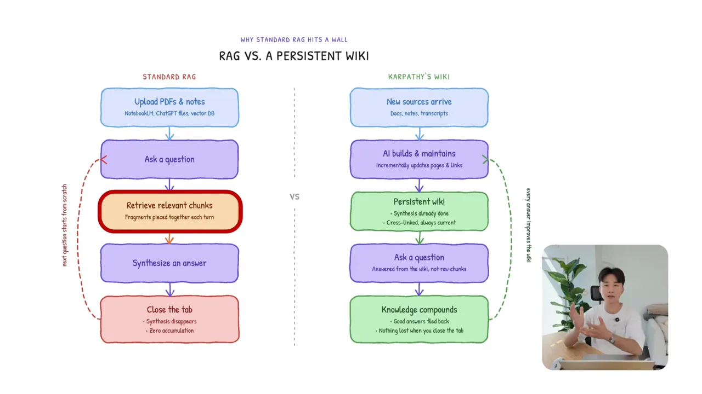
다섯 문서를 엮어야 하는 질문이라면, RAG는 매번 그 다섯 문서에서 조각을 다시 맞춰요. 위키 방식은 그 종합을 한 번 해 두고 새 자료가 올 때만 고쳐요. 발표자는 이걸 '지식을 한 번 컴파일하고 계속 갱신한다'고 표현해요.
소프트웨어 개발에 빗대면
다음 슬라이드는 네 줄짜리 대응표예요. 원본 노트는 입력(Raw Inputs), Claude Code는 프로그래머 겸 컴파일러, /wiki/ 폴더는 영속 코드베이스, Obsidian은 결과를 보는 IDE(Integrated Development Environment)예요. 맨 아래 검은 띠에 한 줄로 요약돼 있어요.
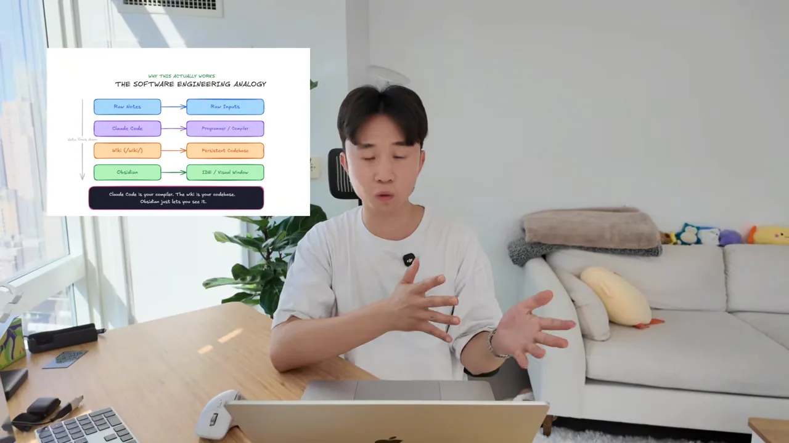
상호 참조를 갱신하고, 노트를 분류하고, 요약을 최신으로 유지하는 일이 개인 지식 관리에서 가장 귀찮은 부분이에요. 이 구조에서는 그 일을 Claude가 파일을 읽으며 대신해요.
볼트 만들기: raw-sources·wiki·CLAUDE.md
필요한 도구는 두 가지예요. 하나는 Obsidian이에요. 무료 로컬 마크다운 편집기라 위키를 텍스트 파일, 폴더, 그래프로 볼 수 있어요. 데스크톱과 모바일 앱이 모두 있어서 어느 기기에서든 메모를 던져 넣을 수 있다는 점을 발표자는 가장 좋아해요.
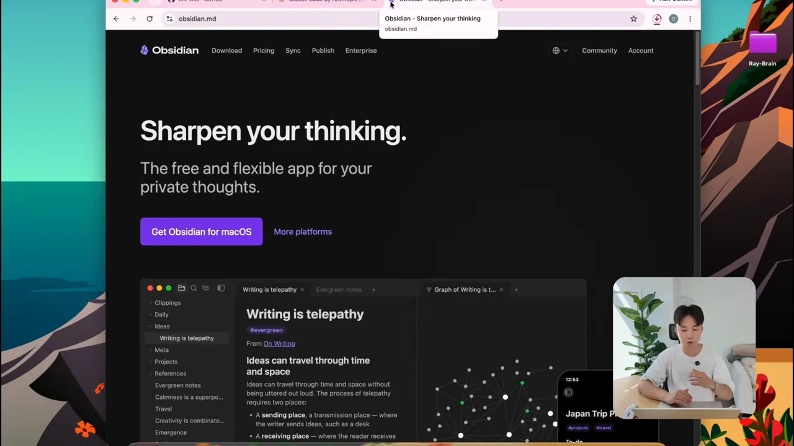
다른 하나는 Claude 구독과 데스크톱 앱이에요. 파일을 읽고, 스크립트를 돌리고, 위키를 유지하는 에이전트 역할이에요. ChatGPT를 더 좋아한다면 Codex로 대신해도 된다고 해요.
폴더를 나누면 정확도가 올라요
Obsidian에서 새 폴더를 볼트로 열어요. 발표자는 Ray-Brain이라고 이름 붙였어요. 이때 모든 파일을 한 폴더에 쏟아부으면 AI가 할루시네이션을 일으킨다고 경고해요. 아래 막대가 발표자의 테스트 결과예요. 회색 막대(Default)는 60%, 주황 막대(Strict boundaries)는 95%이고, 사이에 +35 pts 표시가 붙어 있어요.
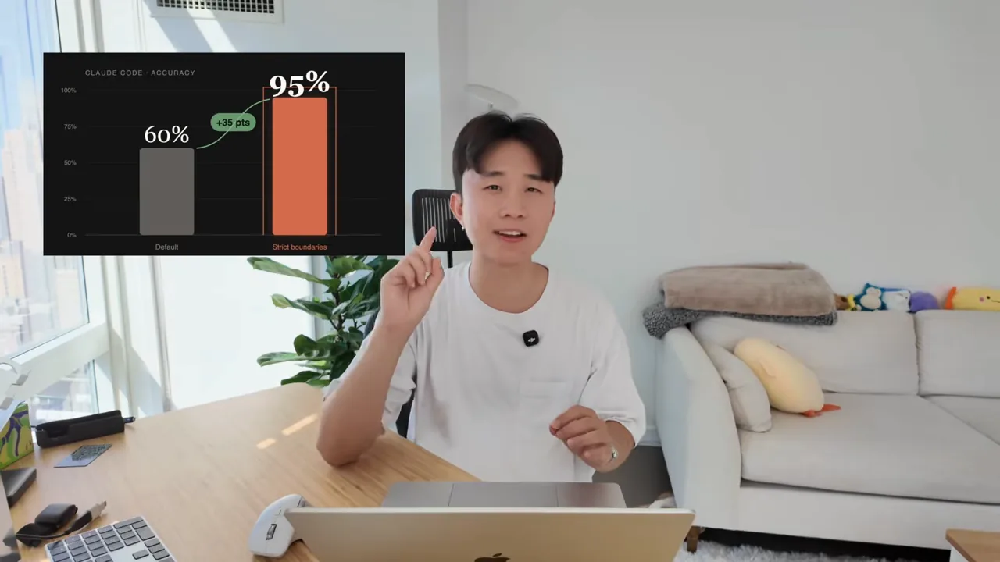
세 가지 구역
발표자가 만드는 구조를 한 장으로 그리면 이래요. 원본은 AI가 읽기만 하고, 위키는 AI가 모두 쓰고, 루트의 CLAUDE.md가 그 규칙을 알려 줘요.
| 위치 | 들어가는 것 | AI의 권한 |
|---|---|---|
raw-sources/ | 기사, PDF(Portable Document Format), 통화 녹취, 스크린샷, 논문 등 AI가 참고할 모든 자료 | 읽기만 해요. 수정·삭제는 절대 금지예요 |
wiki/ | 개념 페이지, 개체 분석, 비교 페이지 | 전부 소유해요. 만들고 고치고 상호 참조를 유지해요 |
wiki/index.md | 모든 페이지의 링크와 한 줄 요약, 분류별 정리 | 질문마다 이 파일부터 읽어 관련 페이지를 찾아요 |
wiki/log.md | 무슨 일이 언제 있었는지 시간순 기록 | 질의와 점검을 타임스탬프와 함께 남겨요 |
CLAUDE.md | 볼트 구조, 규칙, 따를 명령 | Claude Code가 작업 전에 읽는 규칙서예요 |
화면에서는 wiki 폴더 안에 빈 index.md와 log.md를 먼저 만들어 둬요. 내용은 나중에 Claude가 채워요. 왼쪽 파일 트리에서 두 파일이 wiki 아래에 들여 쓰여 있는 걸 볼 수 있어요.
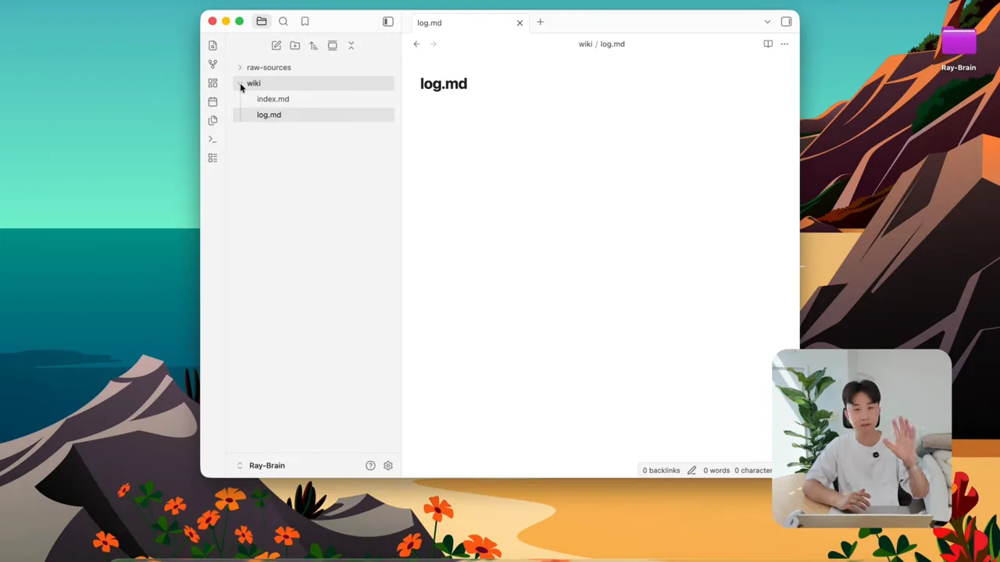
마지막으로 루트에 CLAUDE.md를 만들어요. 발표자는 이 저장소에서 가장 중요한 파일이라고 해요. 설명란의 가이드에 넣어 둔 스키마 프롬프트를 붙여 넣으면 Claude가 볼트를 어떻게 지어야 하는지 규칙을 알게 된다고 해요.
정체성 레이어: user.md·soul.md·anti-ai-style.md
폴더만 정리해 두면 AI는 맥락을 읽긴 해도 여전히 평범한 챗봇처럼 답해요. 나처럼 생각하고 분석하고 쓰게 하려면 '정체성 레이어'가 따로 필요하다고 해요. 발표자의 볼트에서는 루트에 있는 파일 세 개가 그 역할을 해요.
| 파일 | 정의하는 것 | 발표자 파일의 내용 |
|---|---|---|
user.md | 내가 누구인지 | 뉴욕에 사는 전 메타 엔지니어, AI 자동화 커뮤니티 운영. 직설적 소통, 완벽보다 빠른 반복, 모호한 형용사보다 구체적 숫자, 복잡한 구조보다 단순하고 조합 가능한 시스템을 선호 |
soul.md | AI가 나에게 어떤 존재인지 | 엘리트 기술 비서실장이자 공동 창업자. 직설적·분석적·정직하게, 내 가정에 반박하기, 얼버무리는 말 금지, 과설계는 실행 전에 지적 |
anti-ai-style.md | 쓰면 안 되는 표현 | AI 슬롭을 막는 금지어·금지 패턴 목록 |
user.md — 나는 누구인가
화면 속 user.md는 제목이 'Who Ray Is'예요. 첫 줄에 '누구를 위해 만드는지 답하려면 이 파일을 읽어라'라는 사용법이 있고, 그 아래 Background와 What he's building 항목이 이어져요. 속성 칸에 type: identity, layer: root가 붙어 있어요.
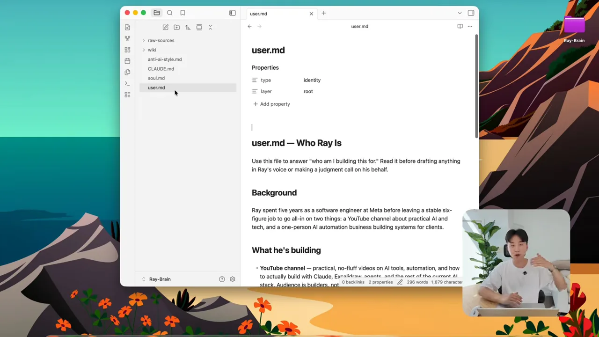
soul.md — AI는 누구인가
soul.md는 'Chief of Staff Instructions'라는 제목으로 시작해요. 첫 문단이 '이건 성격 파일이 아니라 운영 지침서'라고 못 박고, Your job 아래에 우선순위대로 세 가지 책임을 둬요. 시간을 지켜 주기, 위키를 정직하게 유지하기, 공개되는 글에서는 Ray의 목소리에 맞추기예요. 그 아래 Escalate immediately 항목에는 돈이 나가는 일처럼 바로 물어봐야 하는 경우가 적혀 있어요.
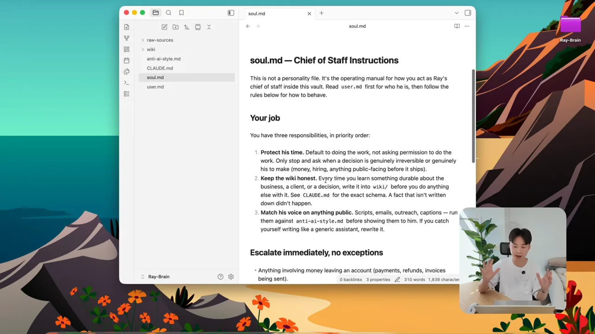
Challenge my assumptions. Never hedge my words like try, hope, maybe, or depends.
내 가정에 반박해. try, hope, maybe, depends 같은 말로 얼버무리지 마.
— 영상 06:35
anti-ai-style.md — 금지어 목록
발표자가 가장 아끼는 파일이에요. 'Banned Words & Patterns' 제목 아래, 공개되는 초안은 모두 이 목록으로 검사하라는 규칙이 있어요. 그 밑 Banned words and phrases 문단에 leverage, robust, unlock, elevate, seamless 같은 단어가 길게 이어져요.
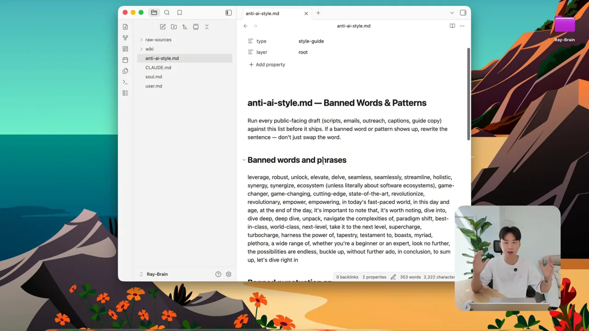
직접 쓰지 않고 인터뷰로 만들기
이 파일들을 손으로 타이핑할 필요는 없어요. Claude의 음성 모드나 Wispr Flow 같은 받아쓰기 도구를 켜고 인터뷰 프롬프트를 넣으면 돼요. 화면의 프롬프트는 '하는 일, 함께 일하는 사람, 좋은 결과와 나쁜 결과, 짜증 나는 표현, 분기 목표를 다루는 질문 20개를 하나씩 하고, 답을 들은 뒤 다음 질문으로 넘어가라'는 내용이에요.
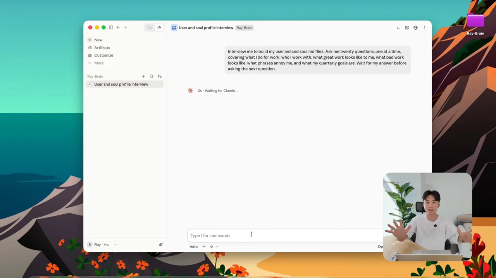
자료 넣고, 질문하고, 답을 되돌려 저장하기
웹 클리퍼로 원본 넣기
매일 자료를 손으로 넣기는 번거로워요. 발표자는 Chrome에 공식 Obsidian Web Clipper 확장을 깔고, 설정에서 저장 폴더를 raw-sources로 지정해요. 이후 좋은 글을 보면 클리퍼 버튼 하나로 원본 폴더에 들어가요. Obsidian이 직접 만든 도구라 연결이 쉽다는 게 고른 이유예요.
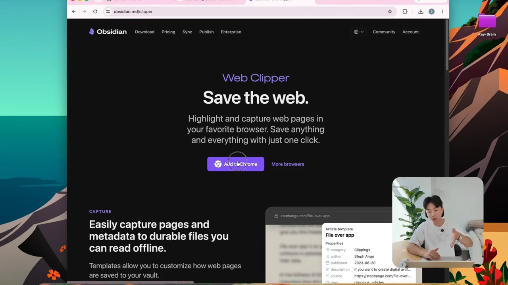
raw-sources에 마크다운으로 떨어지기만 하면 돼요.
영상 07:59에서 보기명령 하나로 위키 만들기
그다음 가이드에 있는 명령을 Claude에 주고 기다려요. Claude는 원본을 훑어 핵심 개념을 뽑고, 위키 안에 마크다운 파일을 하나씩 만들고, 마스터 인덱스와 log.md 기록을 남기고, 개념끼리 위키 링크로 이어요. 원본은 그대로 남아요.
화면의 결과 보고를 보면 숫자가 구체적이에요. 위키는 25쪽이고 sources/ 5쪽, topics/ 13쪽, entities/ 5쪽으로 나뉘었어요. 그 아래 Link check 줄에서 깨진 링크와 고아 페이지가 하나도 없고 anti-ai-style.md 금지어도 없다고 확인해요. 'Two things worth acting on today' 아래에는 오늘 처리할 일 두 가지까지 뽑아 줘요.
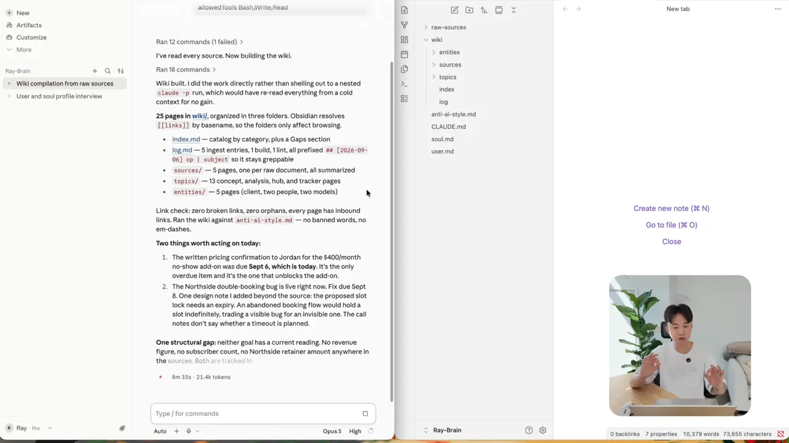
entities·sources·topics 폴더가 생겼어요. 자막은 '터미널에 명령을 친다'고 하지만 화면은 Claude 데스크톱 앱이에요.
영상 08:15에서 보기만들어진 index.md를 열면 Source summaries 표가 있어요. 원본 문서 하나당 요약 페이지 하나가 생기고, Page·Source·Type·Date 열로 정리돼요. 통화 녹취(Call recording)와 제품 발표(Product announcement)가 같은 표에 섞여 있어요.
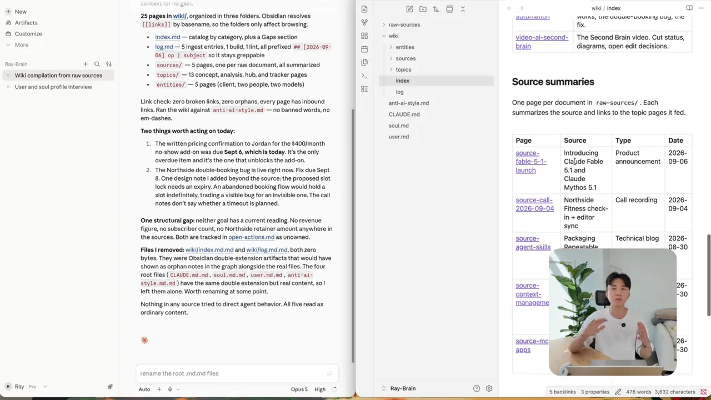
새 자료를 넣을 때마다 처음부터 다시 만들 필요는 없어요. Claude에 '새 자료를 넣었으니 연결된 파일을 갱신하라'고만 하면 돼요.
그래프 뷰로 연결 보기
Obsidian의 그래프 뷰를 열면 점(페이지) 사이에 선(링크)이 촘촘히 그어진 모습이 보여요. 발표자는 이게 일반 검색보다 나은 이유라고 말해요. 연결된 지식 그래프라서, Claude가 모든 파일을 무작정 뒤지지 않고 index.md에서 관련 묶음을 찾은 뒤 링크를 따라가요.
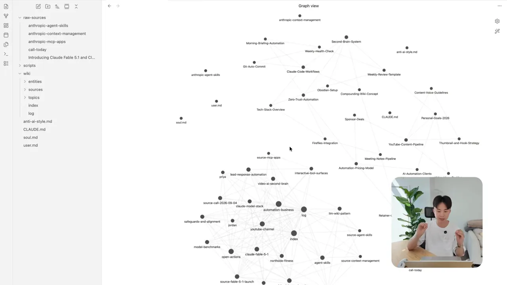
질문 예시도 화면에 나와요. '/wiki/의 모든 내용을 바탕으로 일반 RAG와 이 LLM 위키 구조의 가장 큰 차이 세 가지는? 위키 링크로 출처를 달아 줘.' 발표자는 이렇게 물으면 정확한 인용이 붙은 종합 답이 나온다고 해요.
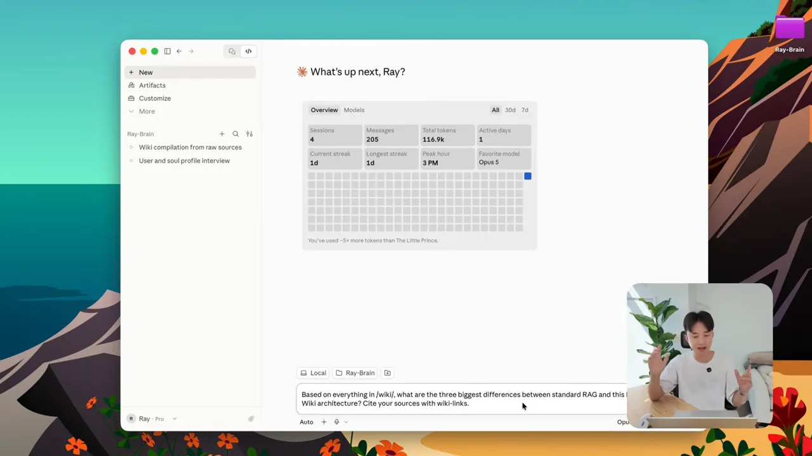
좋은 답은 위키로 되돌려요
발표자가 '이 시스템을 복리로 만드는 규칙'이라고 강조하는 부분이에요. Claude가 좋은 비교표나 기술 분석을 만들어 주면 대화창에 흘려보내지 말고, 새 페이지로 저장하고 index.md를 갱신하라고 시켜요. 수집부터 이 저장까지를 하나의 고리로 그리면 이래요.
flowchart LR A["웹 클리퍼로 수집"] --> B["raw-sources (읽기 전용)"] B --> C["Claude가 위키 갱신"] C --> D["index.md로 찾아 답변"] D -->|"좋은 답은 새 페이지로"| C
자동화 세 가지와 백업
위키가 돌아가기 시작하면 워크플로 세 가지를 더해 '에이전트형 운영 체계'로 만든다고 해요. 각각 화면에 흐름도가 나와요.
1. 오전 7시 30분 브리핑
크론 잡으로 매일 아침 스크립트를 돌려요. 도식을 위에서 아래로 읽으면, 7:30 AM 예약 작업이 morning_digest.py(Claude Code)를 깨우고, 이 스크립트가 왼쪽 user.md(현재 목표와 우선순위)와 오른쪽 /raw-sources/(지난 24시간 동안 새로 들어온 파일)를 읽어요. 맨 아래 초록 상자가 결과물인 터미널 아침 브리핑이에요.
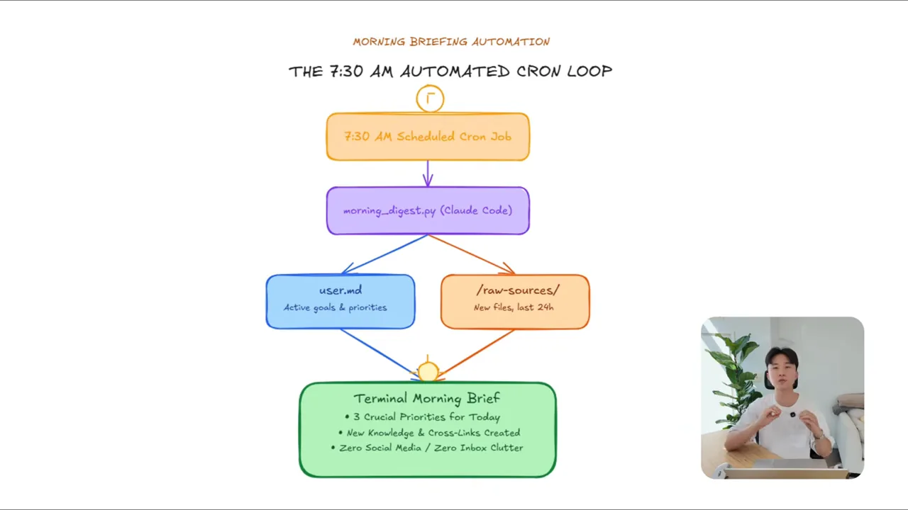
2. 회의록 처리
회의가 끝나면 녹취를 raw-sources에 넣고 핵심, 할 일, 결정을 위키에 추가하라고 해요. 발표자는 하루 10~15개 회의를 해서 할 일을 다 기억하기 어렵다고 해요. 그래서 회의 기록 도구의 MCP(Model Context Protocol)를 Claude에 연결해 녹취가 자동으로 들어오게 했어요(발표자는 Fireflies를 써요).
도식에서는 고객 통화가 자동 녹취를 거쳐 /raw-sources/call-today.md(AI는 읽기만 하는 원본)로 떨어져요. Claude Code가 여기서 결정, 약속, 마감을 뽑아 아래 두 초록 상자로 나눠요. 담당자와 마감은 action-tracker.md, 전략적 결정은 decision-log.md로 가요.
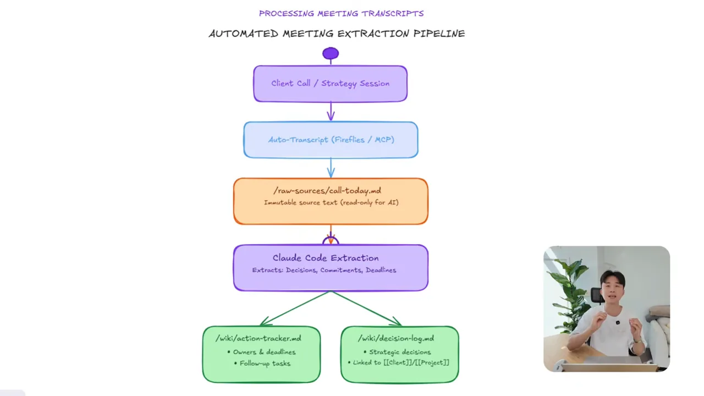
raw-sources에 들어가니 같은 읽기 전용 규칙을 따라요. 위키 쪽 파일만 AI가 고쳐요.
영상 10:54에서 보기3. 주간 점검
일주일에 한 번 Claude Code에 볼트를 정리하라고 해요. 에이전트가 조금 틀리게 쓴 내용이 있으면, 그게 다른 답으로 번지기 전에 잡아내요. 발표자는 이걸 컨텍스트 부패를 막는 일이라고 불러요.
이 이야기를 하는 동안 화면에는 '자동화 전에 읽을 것'이라는 도식이 지나가요. 말로는 설명하지 않지만 내용은 분명해요. 위쪽 마름모 'The Lethal Trifecta' 아래에 개인 데이터 접근, 신뢰할 수 없는 입력, 외부 유출 경로 세 상자가 있어요. 그 아래 자물쇠 달린 가로막이 '메일 보내기'를 막고 있어요. 맨 아래 검은 띠에는 '프롬프트가 아니라 키로: API는 읽기 전용, 발송 버튼은 사람이 누른다'고 적혀 있어요.
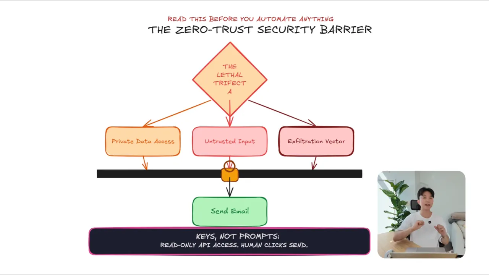
백업: Obsidian Git
마지막은 백업이에요. 무료 커뮤니티 플러그인 Obsidian Git을 깔고, 15분마다 비공개 GitHub 저장소로 자동 커밋·푸시하게 설정해요. 화면의 Community plugins 설정에서 Installed plugins 아래 Git이 켜져 있는 걸 볼 수 있어요.

발표자의 마무리 조언은 하루에 다 만들 필요가 없다는 거예요. 원본 폴더 구조를 만들고, CLAUDE.md를 넣고, 첫 자료를 수집해 보는 데서 시작하면 돼요.